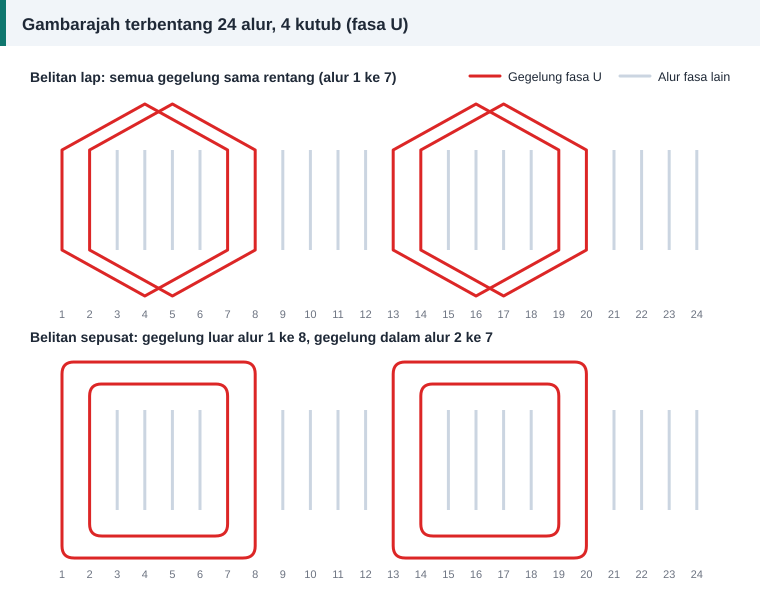

Panduan bengkel
Belitan Lap dan Belitan Sepusat: Cara Mengenal dan Melilitnya
Jika stator dibelah dan dibentangkan rata, belitannya kelihatan seperti corak berulang. Dua corak paling kerap ditemui: gegelung serupa yang bertindih, dan gegelung berlainan saiz yang bersarang. Rajah di bawah menunjukkan kedua-duanya untuk satu fasa.


Belitan lap
Semua gegelung serupa: bentuk sama, rentang sama dan bilangan lilitan sama. Setiap gegelung bertindih separuh di atas jirannya, seperti kad yang disusun senget. Dalam rajah atas, dua gegelung bagi setiap kumpulan fasa U merentang dari alur 1 ke 7 dan dari alur 2 ke 8.
Kelebihannya, satu acuan sahaja diperlukan, hujung belitan kemas dan seragam, dan ia mudah dijadikan belitan dua lapis berpic pendek. Kekurangannya, gegelung saling bertindih, jadi beberapa gegelung pertama perlu diangkat semula untuk menyelitkan gegelung terakhir.
Belitan sepusat
Gegelung dalam satu kumpulan mempunyai pusat yang sama tetapi saiz berlainan, seperti gelang di dalam gelang. Dalam rajah bawah, gegelung luar merentang dari alur 1 ke 8 dan gegelung dalam dari alur 2 ke 7.
Gegelung tidak bersilang di dalam kumpulan, jadi satu kumpulan boleh dimasukkan sekali gus. Susunan ini sesuai untuk pemasukan dengan mesin, dan sebab itu banyak motor keluaran kilang menggunakannya. Sebagai balasan, acuan bertingkat diperlukan, setiap saiz gegelung mempunyai panjang lilitan berbeza, dan hujung belitan biasanya lebih panjang.
Secara elektrik, kedua-duanya boleh setara
Perhatikan rajah sekali lagi. Dalam kedua-dua susunan, fasa U menduduki alur yang sama: 1, 2, 7, 8, 13, 14, 19 dan 20. Arus dalam alur-alur itu sama, maka medan magnet yang terhasil juga sama. Yang berbeza hanyalah cara hujung gegelung disambungkan di luar teras. Purata rentang gegelung sepusat, iaitu 7 dan 5, ialah 6, sama dengan rentang gegelung lap.
Belitan rantai
Satu lagi susunan satu lapis ialah belitan rantai. Semua gegelung serupa seperti lap, tetapi hujung belitannya bersilang berselang-seli sehingga kelihatan seperti mata rantai. Motor 24 alur 4 kutub sering menggunakan rentang 1–6 dalam susunan ini.
Cara membaca rentang daripada belitan lama
- Tandakan satu alur sebagai alur 1.
- Ikut satu gegelung dari sisi pertama ke sisi kedua, dan kira alur sehingga alur tempat sisi kedua berada.
- Tulis rentang setiap gegelung dalam satu kumpulan, contohnya 1–8 dan 2–7.
- Catat sama ada kumpulan seterusnya bermula bersebelahan atau bertindih.
Senarai penuh data yang perlu dicatat ada dalam cara merekod data belitan.
Menukar sepusat kepada lap
Penukaran ini boleh diterima jika fluks setiap kutub kekal sama. Panduan amalan baik EASA/AEMT menyatakan bahawa pembaik pulih sering memilih belitan lap kerana semua gegelungnya sama. Dua syarat perlu dipenuhi: hasil darab lilitan per fasa dan faktor belitan dikekalkan, dan panjang purata lilitan tidak bertambah.
Yang mana lebih baik?
Tiada pemenang mutlak. Untuk kerja menyalin, gunakan jenis yang sama dengan asal. Tukar hanya jika anda memahami kesannya terhadap faktor belitan dan panjang hujung belitan.
Rujukan dan bacaan lanjut
Artikel berkaitan
Belitan Satu Lapis dan Dua Lapis: Perbezaan dan Pilihan
Belitan satu lapis mudah dimasukkan, belitan dua lapis memberi gelombang medan yang lebih licin. Bandingkan bilangan gegelung, penebat, kegunaan dan kesannya terhadap lilitan semula.
Cara Merekod Data Belitan Sebelum Membuka Motor
Lima minit mencatat data sebelum memotong belitan lama menjimatkan berjam-jam meneka kemudian. Gunakan senarai semak ini untuk plat nama, teras, gegelung, dawai dan sambungan.
Faktor Agihan dan Faktor Belitan Motor Tiga Fasa
Gegelung yang diagih dalam beberapa alur menghasilkan voltan yang sedikit berbeza fasa. Faktor agihan mengukur kesannya, dan bersama faktor pic ia membentuk faktor belitan.